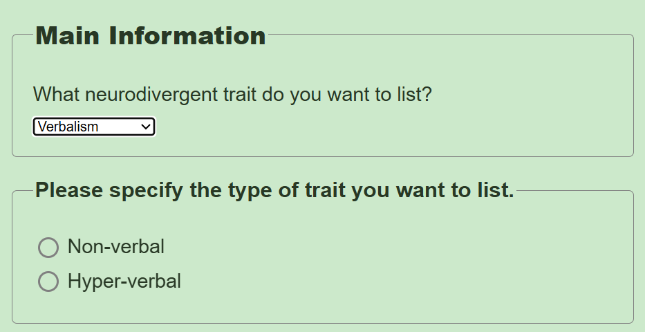
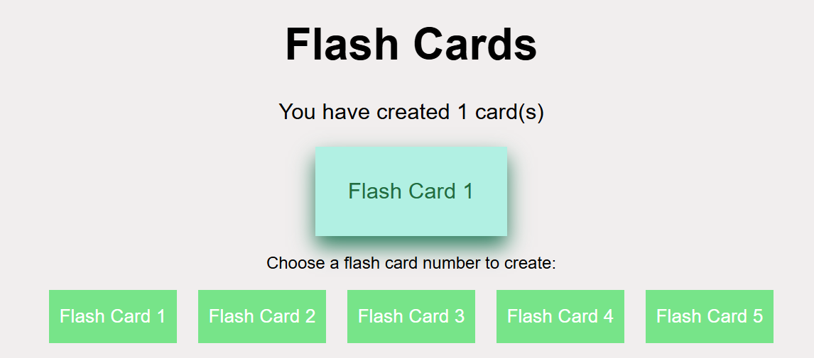
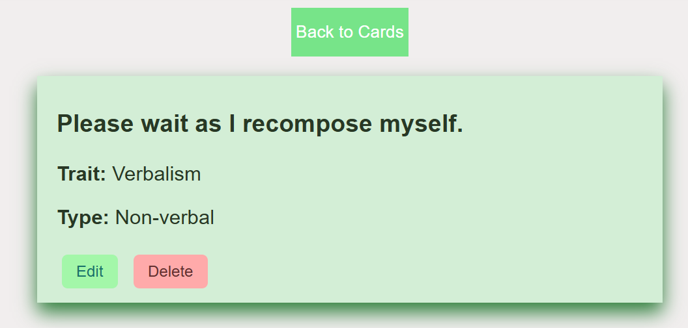
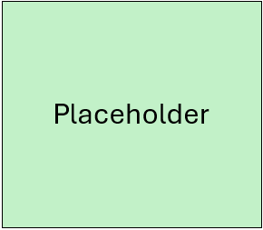

Flash Card Help
Struggling to make a flash card? Here's a breakdown on what you should do:
Navigate your way to the flash card creation page
Begin by navigating to Flash Cards at the top of this page. You can then click on five different buttons, corresponding to five flash cards, that will take you to the creation page.
Specify your trait
When choosing a trait to list on your flash card, you may be prompted with additional info:

In the example above, you can specify whether you are non- or hyper-verbal. It is required to specify the trait you want to list so people understand what exact trait you possess. In this case, Verbalism alone would not be enough, as they must know if you are non- or hyper-verbal.
Keep in mind that you can not choose the same type of trait across two flash cards (e.g. two non-verbal cards), but you can have two flash cards with two different types of the same trait (e.g. a non-verbal and hyper-verbal card).
Extra Information
You are not required to add extra information to your card if you only want people to be aware of your trait. However, it is still recommended so you can inform others on what to do to help you when necessary.
When you successfully create a flash card, you will be prompted to return to the Flash Cards page, where your card will be displayed. You can then click on a flash card to display its information, like so:


Still confused?
If there is anything on your mind, you can always contact StartDifferently or provide feedback. We will always be open to suggestions.
Note: As this a prototype website, you will not be able to contact us at the moment. You can try again if this concept is fully integrated into an app.
